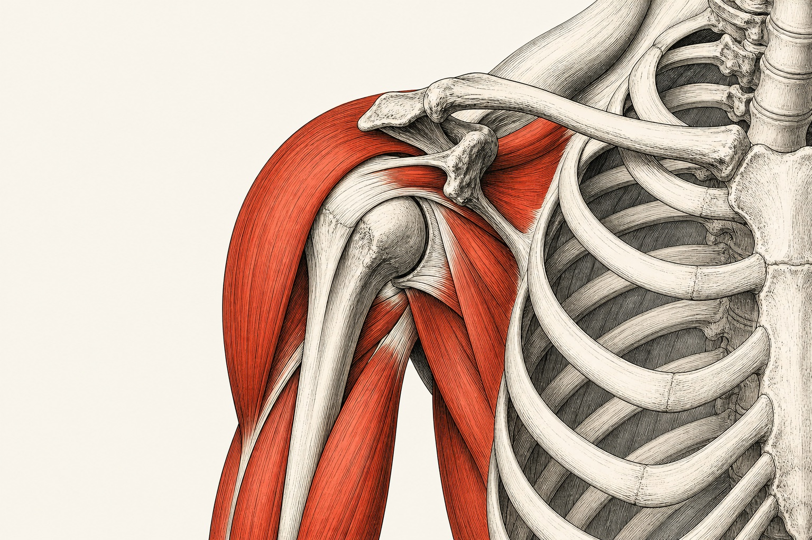

ANA
Materia obligatoria / anual
Anatomía
Estructura del cuerpo humano normal, organizada por regiones, sistemas y relaciones anatómicas.

Carga250 hArchivo09
Biblioteca de materia
Apuntes y recursos
Miembro superior cargado
02 notas
Osteología
Huesos y accidentes anatómicos
02 notas
Artrología
Uniones, medios de adaptación y movimiento
02 notas
Miología
Planos musculares, inserciones y acciones
01 nota
Irrigación
Circulación arterial, venosa y linfática
01 nota
Inervación
Origen, trayecto y distribución nerviosa
01 nota
Topografía
Regiones, límites y relaciones
No hay apuntes que coincidan con esta búsqueda.